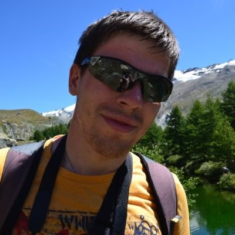

Tomáš Tížek

Summary
I am working in information technologie for about 12 years.
Mostly I am focusing on automation in Microsoft area (AD, Azure AD
Exchange, Windows Servers, etc.) using powershell and C# language.
Right now I am trying to start my new part of career as web developer.
Education
- 2008 - 2012: High school of Economy: IT in Economy
- 2013 - 2017: Silesia university in Opava: Applied IT
Work experience
-
2012 - 2015: Brano IT: System administrator - Windows Servers maintenace,
Network devices maintenace, Onsite user support (software installations, hw replacement, etc.)
-
2014 - 2014 - Tieto Czech: Junior network specials - Maintence of network
primarly based on Cisco, Juniper and CheckPoint
- 2015 - 2018 - Tieto Czech: Server implementation specialist - Design and
processing of whole implementation process - from preparing of network to
transfering server to contunous service.
- 2018 - 2019 - Seznam: Junior developer - Developer work mainly in Scala, Java and
python.
- 2019 - 2022 - Ovanet: System administrator - Taking care about whole Microsoft
area in company - Winodows Servers, AD, AAD, Exchange. Implementation of M365 solution
from end to end. Internal development work on automation tools mainly in Powershell and C#.
-
2022 - present - Tietoevry - Senior adaxes specialist - Taking care about Adaxes
tool. Most of the time is about develompment of powershell scripts.
Skills
- Poweshell *****
- C# ***
- SQL ***
- Active Directory *****
- Windows Servers *****
- Azure AD ****
- VMware ****
- HTML + CSS ****
Certificates
- 2014 - Cisco CCNA 1 - 4
- 2016 - ITIL® Foundation Certificate in IT Service Management
- 2020 - Windows Server 2019/2016 - advanced management of AD FS
- 2021 - Windows Server 2019/2016 - Active Directory SAE, Tiering and Red Forest
Other
© Tomas Tizek. All rights reserved.